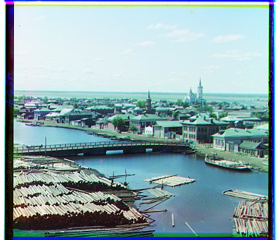
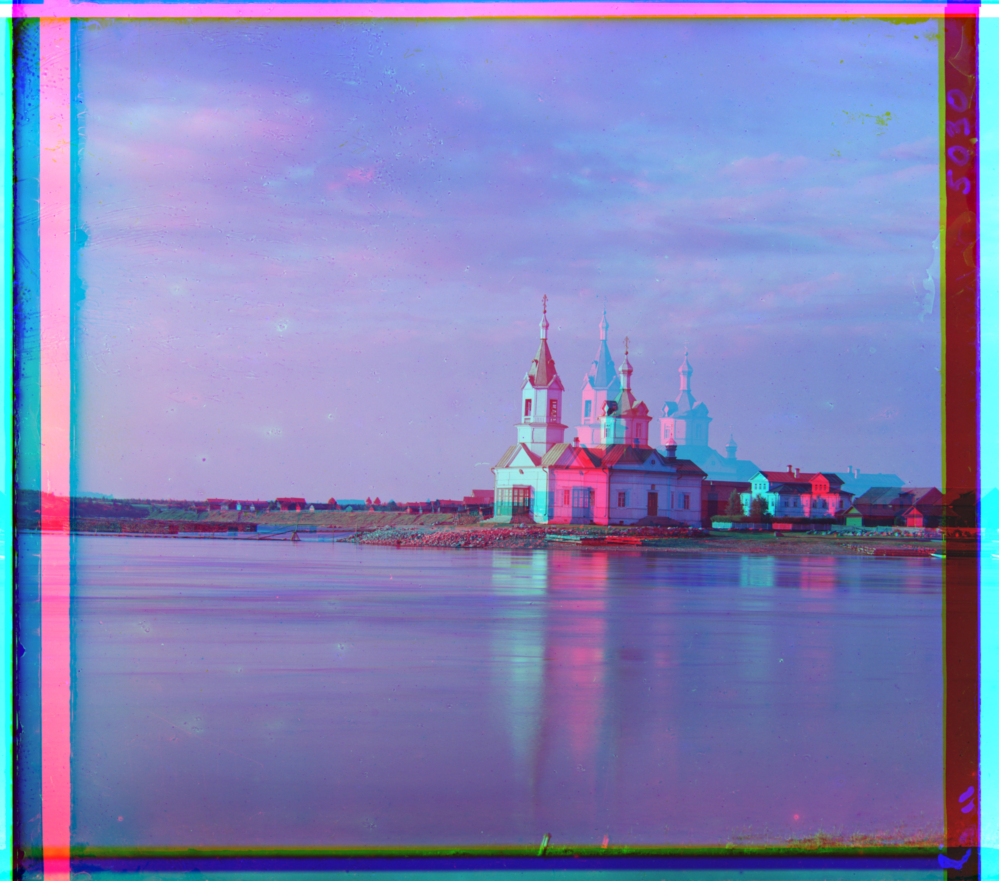
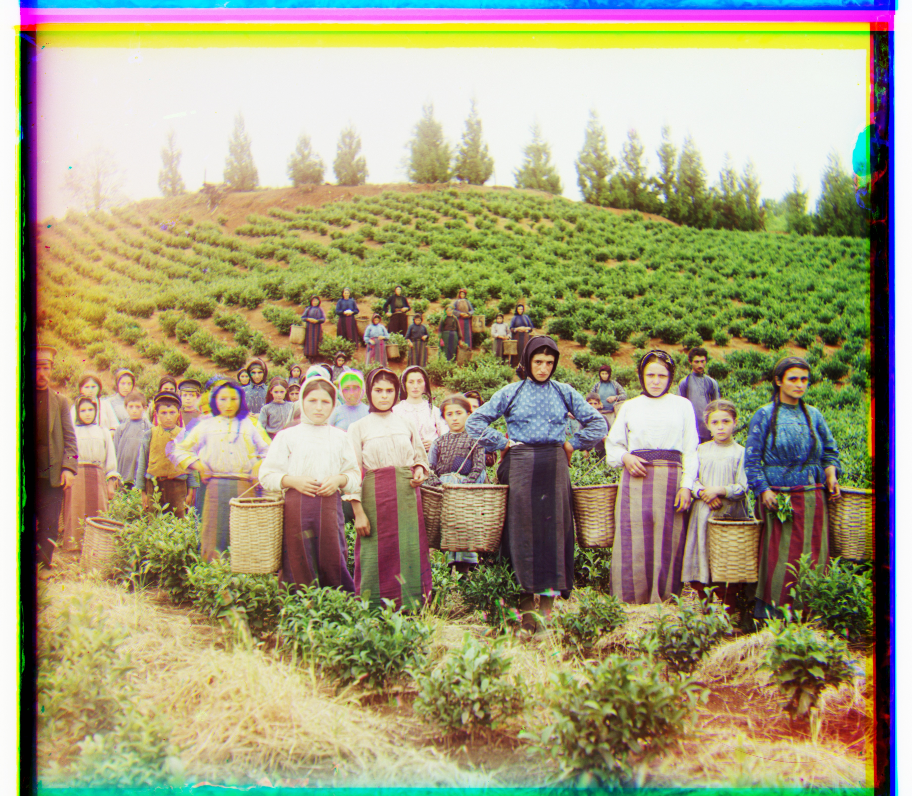
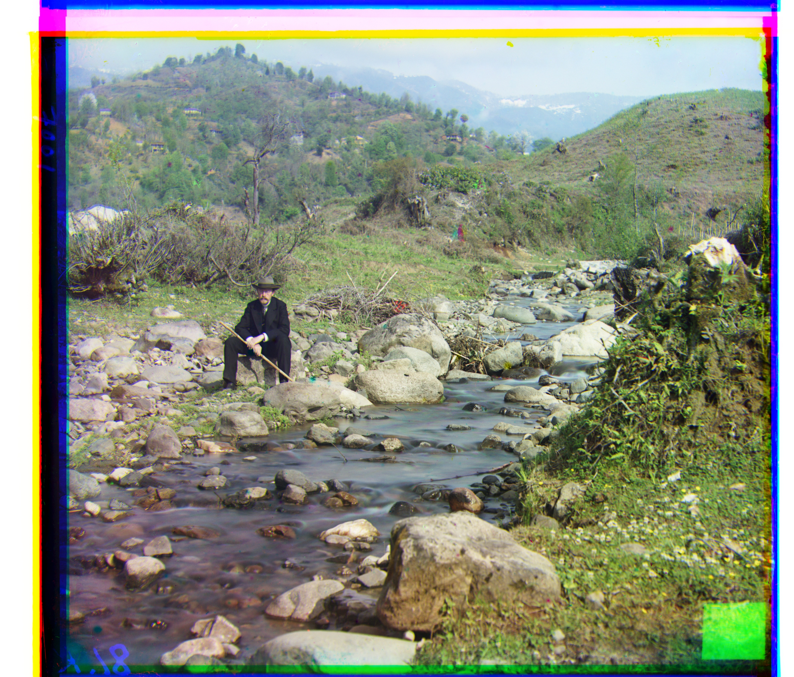
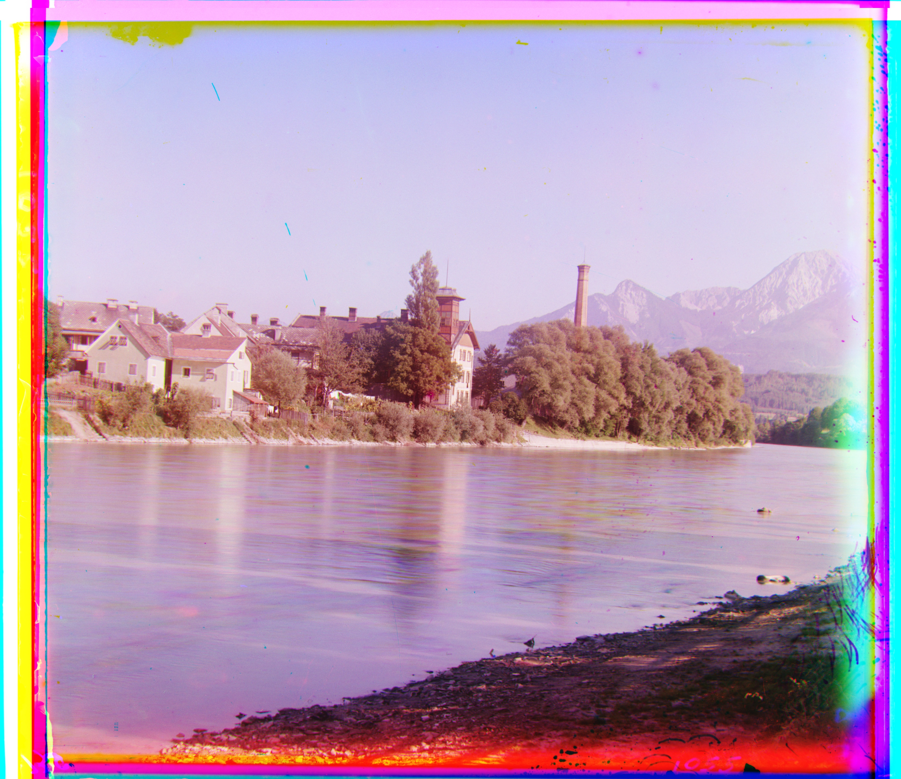
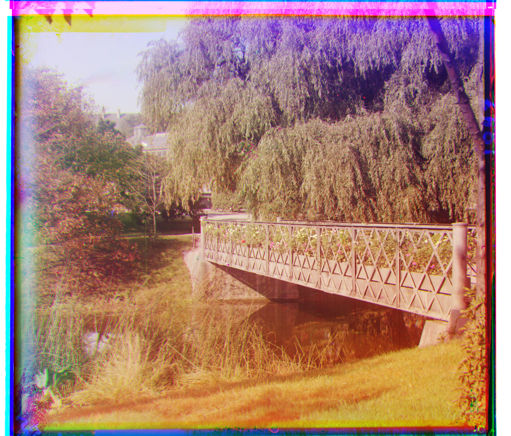
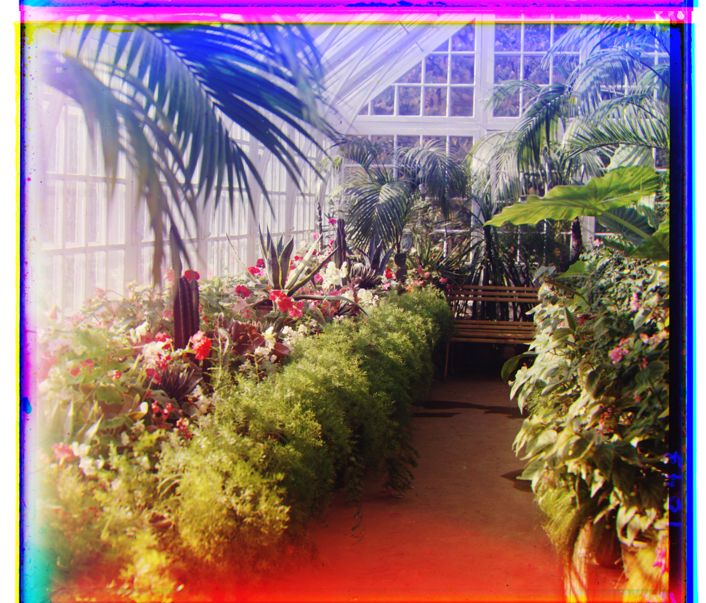

Project 1: Images of the Russian Empire
For this project, I reconstructed color photographs from the Prokudin-Gorskii glass plate collection. Each of our original scans contains three grayscale exposures of the same scene, which is captured through blue, green, and red filters, and then stacked in that order vertically. My goal in this project was to separate each of these three exposures, align them as closely as possible, and then combine them into a single RGB image like what we see on the website. As each of the three photographs were taken separately, which consequentially means the subjects and camera position are shifted between channels, directly stacking them produces visible red, green, and blue ghosting around the edges
The blue channel was my fixed reference image, and I independently aligned the green and red channels to it. First, I implemented a very simple single-scale search for the smaller JPEG images, and then used the same idea with a coarse-to-fine image pyramid so that it could handle the much larger/costly TIFF scans efficiently. I used the L2 distance between pixel values for both methods as the alignment metric, and when I was computing the scores, I ignored image borders.
Single-Scale Alignment
As I mentioned above, I used exhaustive search over possible translations for the smaller JPEG images. I tried every vertical and horizontal displacement from -15 to 15 pixels for each channel being aligned. This gives me 961 possible shifts for each channel. For every possible displacement, I shifted the red or green channel using np.roll and compared it against the blue reference channel. To evaluate each alignment, I used the L2 distance. A smaller L2 score means that the two channels agree more closely, which is why I always selected the displacement with the minimum score. L2 is simple and fast to compute with NumPy, and works for most of these images when the channels have a very similar spatial structure. The borders of the scanned plates oftentimes contained black or white regions that are not part of the actual, relevant scene, so I excluded a 20-pixel border from our alignment score. np.roll also wraps pixels from one side of the image to the other, which creates artificial content near the edges of our image after a shift. Thus, by ignoring the border, we are able to ensure that the metric is based mostly on the real scene. I shifted both the green and red channels by their offsets after finding the best displacement for each, then stacked the channels in red, green, blue order. This gave us final colorized image that you see on this webpage.
Cathedral

Green offset: (5, 2), Red offset: (12, 3)
Monastery

Green offset: (-3, 2), Red offset: (3, 2)
Tobolsk

Green offset: (3, 2), Red offset: (6, 3)
Multi-Scale Pyramid Alignment
Exhaustive search is much more expensive for TIFF images with higher resolution, as the displacement between channels can be hundreds of pixels, so searching a very large window would require evaluating way too many candidate shift. To make our target alignment more efficient, I implemented a coarse-to-fine image pyramid. At each level, I downsample both the moving channel and the blue reference channel by a factor of two using skimage.transform.rescale with anti-aliasing enabled. Then, I continued shrinking the images until the smallest dimension is less than 400 pixels. At that coarse level, the possible displacement has also been reduced by the same scale factor, so our original single-scale [-15, 15] exhaustive search is sufficient.
Now that I have an alignment estimate at the coarsest level, I go up the pyramid one level at a time. I multiply both components of the displacement by two as the next level has twice the resolution. I only need to search a small 5 by 5 neighborhood around this predicted displacement instead of repeating a large exhaustive search, corresponding to offsets from -2 to +2 pixels in both directions. This process continues until the algorithm reaches the original full-resolution image. This reduces the amount of work drastically compared with searching over every possible full-resolution displacement. I also used L2 distance at each pyramid level, but ignored approximately 10% of the image around the border before computing the score for large images. A proportional crop makes more sense than a fixed number of pixels because border artifacts may occupy a much larger absolute number of pixels. I stacked the green and red channels with the blue channels after they are aligned independently to form the final RGB result.
Church

Green offset: (25, 4), Red offset: (63, 214)
This was the main failure for my alignment method. The final result was not perfectly aligned visually even though the L2 search selected offsets of (5, 2) for the green channel and (12, 3) for the red channel. This is most likeley due to the fact that the raw L2 pixel similarity is sensitive to intensity differences between the color channels, and does not explicitly match edges or structural features. This can be fixed in a better method by aligning image gradients or edges.
Emir

Green offset: (49, 24), Red offset: (103, 57)
Harvesters

Green offset: (59, 16), Red offset: (124, 13)
Icon
Green offset: (41, 17), Red offset: (90, 23)
Ilemselga

Green offset: (39, 7), Red offset: (130, 11)
Melons

Green offset: (82, 11), Red offset: (178, 13)
Religious Painting

Green offset: (28, 3), Red offset: (68, 7)
Self Portrait

Green offset: (79, 29), Red offset: (176, 36)
Siren

Green offset: (49, -6), Red offset: (96, -25)
Three Generations

Green offset: (53, 14), Red offset: (112, 11)
Wharf

Green offset: (15, -7), Red offset: (83, -16)
Additional Images
I also tested the same alignment process on three additional Prokudin-Gorskii glass plate scans per the instructions. Each one was split into blue, green, and red channels, processed with the same pyramid alignment algorithm, and reconstructed using the resulting offsets. This verifies that our method is not simply tuned to the examples provided in the assignment as these outside images were randomly selected. They contain different scene structures and displacement magnitudes, but the same L2-based coarse-to-fine procedure still works and produces quite reasonable color reconstructions.
Additional Image 1

Green offset: (33, 51), Red offset: (85, 101)
Additional Image 2

Green offset: (67, -11), Red offset: (119, -28)
Additional Image 3

Green offset: (60, 28), Red offset: (126, 35)
Results
In conclusion, the single-scale exhaustive search we originally started with was sufficient for the small JPEG images, where the channel displacements were limited to few pixels. For larger TIFF images, we used an image pyramid which made it possible to recover much larger shifts efficiently while still using the simple L2 matching criterion. The biggest takeaway I have from this project is that the alignment metric alone is not enough. The way that we choose our comparison region also matters significantly. For instance, ignoring image borders improves the robustness of our alignment because it prevents the algorithm from matching black or white scan artifacts instead of the underlying scene. We used a proportional border crop to achieve a similar effect for the high-resolution images which made our method more consistent across a variety of different image sizes. The final code we used takes the same approach for all images: splitting the stacked plate into three channels, aligning the green and red to blue, using exhaustive L2 search at the coarsest level, refining the displacement through the pyramid, and then stacking the aligned channels into an RGB image. Almost all of our result images from both the provided dataset and additionally chosen examples were visually reasonable without having to manually select a separate alignment for each image.